9. Create Elevation Surface Models
Info
Purpose: To provides the basic concept of LiDAR dataset and point cloud processing in ArcGIS Pro.
Estimated time to complete: 40-50 minutes
Prepared by: Milan Budhathoki, GISP, Geospatial Librarian, GIS and Spatial Data Center, University of Maryland Libraries (mb17@umd.edu).
These slides and the accompanying activities are licensed under a Creative Commons Attribution 4.0 International license.
Note for Instructors
This tutorial provides the basic concept of LiDAR dataset and point cloud processing in ArcGIS Pro. Depending upon spatial extent and the density of LiDAR point cloud, processing can be computationally tedious. The LiDAR dataset that will be used in this tutorial is about 730mb and may take some good compute resources to perform 3D rendering of the dataset.
Introduction to LiDAR¶
Light Detection And Ranging (LiDAR) is an active remote sensing technique that uses pulsed laser energy to collect very high resolution and accurate elevation data across landscapes. LiDAR data can be collected from space, airborne sensors, stationary and mobile platforms.
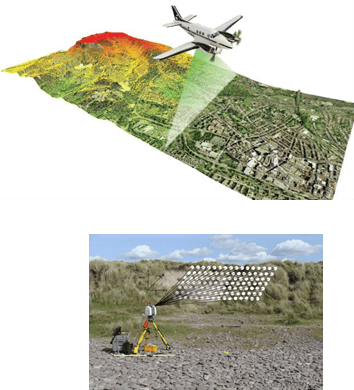
{kind=link}
LiDAR Pulse Return
Depending upon the target object, the point cloud contains data points for scan hits and classified returns (Single Return- bare ground and Multiple Return-tree canopy).
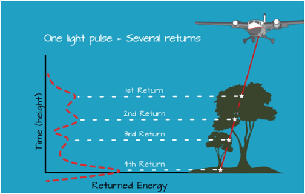
{kind=link}
LiDAR Point Cloud
A LiDAR generated point cloud is a collection of points that stores 3D (XYZ) information along with other attributes (i.e classification, intensity, return number).
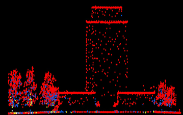
{kind=link}
Download LiDAR Point Cloud¶
-
Go to geo.btaa.org.
-
Under Explore Maps and Data , search for "DC LiDAR Point Cloud".
-
Double click on the layer " District of Columbia: Classified Point Cloud LiDAR Tile Index" then go to the Visit Source link.
-
Within the OCTO Tile Grid web application, zoom down to Washington Monument.
-
Click on the grid box where the majority of Washington Monument is covered (TILE NAME 2015).
-
Click on the "More info" hyperlinked text will download the LiDAR point cloud for the selected tile area.
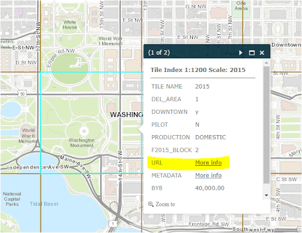
{kind=link}
Loading LiDAR Data in ArcGIS Pro¶
Loading point cloud
-
Start a new ArcGIS Pro project.
-
Add the downloaded .las dataset (i.e, 2015.las) in the 2D map. By default the las point clouds are rendered and symbolized based on elevation.
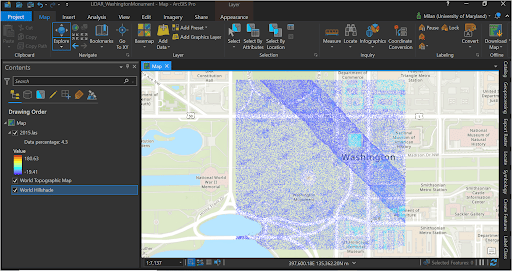
{kind=link}
Setting up 2D and 3D map view
- Under the Insert menu bar, click to add New Local Scene then load the same .las dataset in 3D map window. The 3D map rendering gives a better view of the LiDAR point cloud with respect to the ground reality.
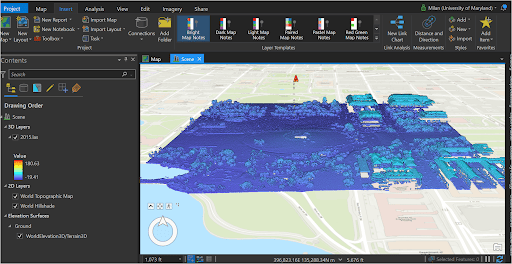
{kind=link}
-
Now, let’s synchronize two map windows so the LiDAR data can be viewed side by side on both 2D and 3D scene.
-
Under the View menu bar, go to Link Views then choose Center and Scale. Now, dock the Scene window right to the Map window so that you can see both map frames as below:
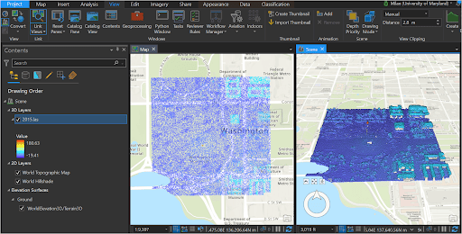
{kind=link}
Symbolize Point Cloud
-
Under the Map window right click on 2015.las layer then go to Symbology. Drawing using Classification instead of Elevation.
-
Likewise, change the symbology for the 2015.ls layer in the Scene window. There are 20 plus classes that are represented by the point clouds. Your map windows may look like below:
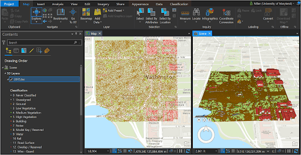
{kind=link}
Filter Point Cloud
Let’s filter the point cloud dataset that only represents vegetation and building.
-
Go to the 2015.las layer Properties then in the Layer Properties window select LAS Filter. Under the Classification Codes, first clear all then check “Low Vegetation”, “Medium Vegetation”, “High Vegetation” and “Building” then click OK.
-
Change the Basemap to Dark Gray Canvas so that the filtered features are stand out well.
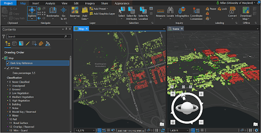
{kind=link}
Creating DEM and DSM from LiDAR¶
DEM (Digital Elevation Model): Bare ground (ground return)
DSM (Digital Surface Model): everything above ground/natural and built environment (all return)
Tip
CHM (Canopy Height Model ): not an elevation but height or distance between the ground and top of the object (i.e, tree, building etc)
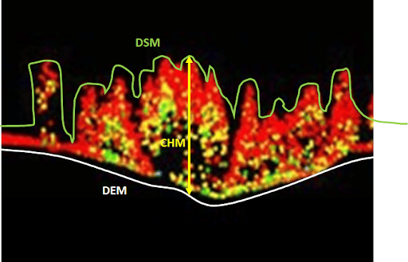
{kind=link}
Creating DEM
-
In ArcGIS Pro, go to the Map window, make sure that no filter is set up for the 2015.las layer (i.e, go to Properties then LAS Filter and make sure everything is checked!).
-
Right click on the 2015.las layer then go to LAS Filters then clear all but keep the Ground.
-
Open LAS Dataset to Raster geoprocessing tool then set up the parameters as shown in the image on the right and Run the tool.
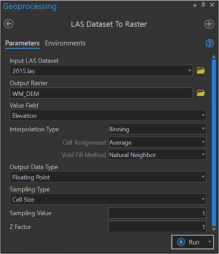
{kind=link}
New DEM which is named WM_DEM will be added to the map. Under the layer Symbology change the Color scheme to Elevation #1 or any multipart color scheme to show elevation gradient.
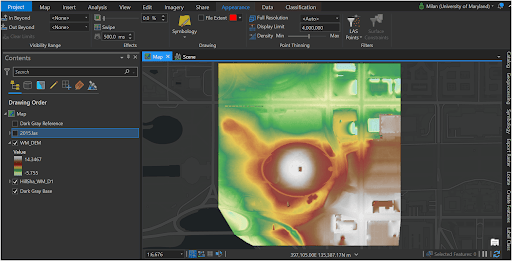
{kind=link}
Creating DSM
-
Under the Map window, make sure that no filter is set up for the 2015.las layer.
-
Right click on the 2015.las layer then go to LAS Filters then choose All Points.
-
Open LAS Dataset to Raster geoprocessing tool then set up the parameters as shown in the image on the right and Run the tool.
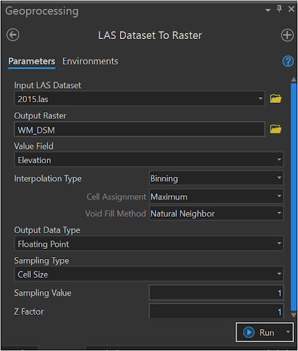
{kind=link}
The new DSM which is named WM_DSM will be added to the map. Under the layer Symbology change the Color scheme to Elevation #1 or any multipart color scheme to show elevation gradient.
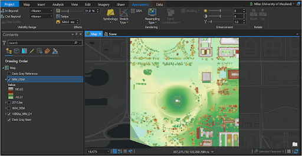
{kind=link}